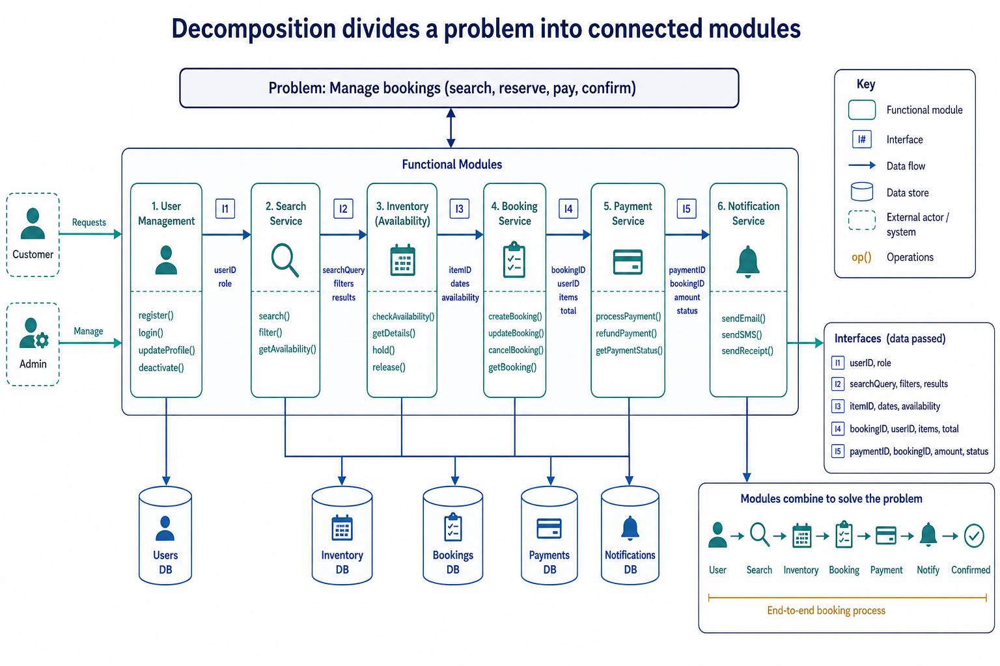

Decomposition and express a problem as modules: Integrated algorithm design from a word problem
Visual overview
Decomposition divides a problem into connected modules

Visual transcript
- Each module has one coherent responsibility.
- Interfaces define the data passed between modules.
- The modules must combine to solve the original problem.
Core explanation
Decomposition breaks a problem into smaller sub-problems with distinct responsibilities. Express the resulting design as program modules with clear inputs, processing and outputs; a module may later be implemented as a procedure that performs an action or a function that returns a value.
Use input, process and output as the design structure for a complete pseudocode solution; the three parts must connect, use meaningful identifiers and satisfy the stated problem.
At each level, preserve the parent step's purpose and input-process-output relationship. Related substeps can be expressed as program modules, including procedures that perform actions and functions that return calculated values.
An algorithm is a solution to a problem expressed as a sequence of defined steps. Each step must be unambiguous, ordered where order matters and capable of being carried out; a vague instruction such as 'process the data' is not a defined step.
![Stepwise refinement starts with a high-level algorithm and repeatedly replaces each complex step with a smaller sequence of defined substeps. Refinement stops when every step is precise enough to implement and its input and output are clear. At each level, preserve the parent step's purpose and input-process-output relationship. Related substeps can be expressed as program modules, including procedures that perform actions and functions that return calculated values. Every level must reduce ambiguity and collectively remain a complete solution.](../../assets/diagrams/stage10-infographics/stage10-lesson-112-analyser.jpg)